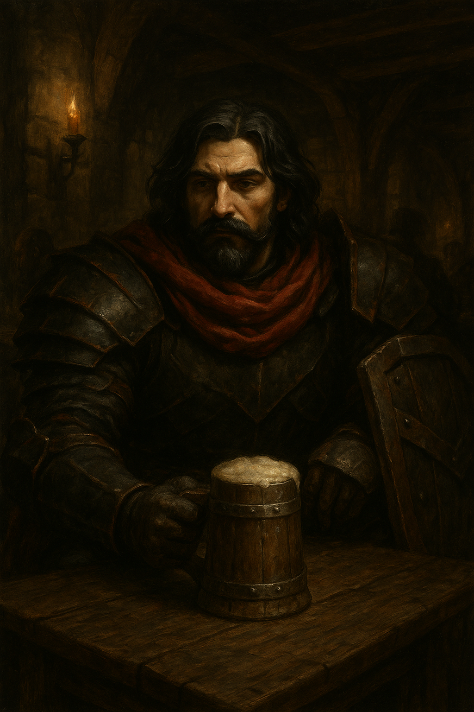

Pertan Perlík
Vesnice, kterou obýval i se svojí rodinou byla vydrancována bezejmennou hrůzou, Terorem mimo jejich
chápání.
Ten poté bezestopy zmizel. Pertan byl jediný přeživší, nadosmrti poznamenaný touto ztrátou.
Rozhodl se, že se tím nenechá zpomalovat, a stane se paladinem.
Ovšem jeho trauma sahá hlouběji, než si dokázal Pertan představit.
Už během jeho mládí a paladinském tréninku se sem tam vyplavaly na povrch jeho temné tužby.
Tužby působit bolest pomstychtivost, ale zároveň něco, čemu by se možná dalo říkat kuráž.
Pertan svádí boj dobra se zlem. Zvítězí Pertanova kuráž nebo ho pohltí temnota, která v něm po té
hrůzné události zůstala?
Pertan se do Pełzacze dostal v doprovodu Zuany, odkud ta se vzala to ví jen ona sama a Lloth. V
Pełzaczi trávil nějaký čas, než se naskytly dobré skutky, které vykonat.
Dobrodružství, které prožil:
- 1. Hledání ztraceného syna
- Franci Jeszetovi se ztratil syn, boj s vlky
- 2. Doprovod karavany
- Doprovod zboží do Garagoru, potkání Narmera a Neery
- 3. Průzkum rozbitých chodeb podzemí
- Průzkum podzemních komplexů, na který dostal Emer zakázku, Pertan zde velmi tápal ve tmě, Sirael byla nepěkně překvapena, když zjistila, že v temmých chodbách se to nemusí hemžit jen krysami
- 4. Hledání Neery pt.1
- Neeru někdo unesl, vyšetřování kdo jí unesl, Perlíkův moment boje, setkání s GGG a Alocou
- 5. Hledání Neery pt.2
- Družina na popud Alocy ukradla z Doemenelské banky tajné spisy naznačující tajné dodávky různého zboží do Denthiru. Následně získala i kombinaci k trezoru/vaultu a za což dostali Neeru na svobodu.
- 6. Znovusetkání s Neerou
- Neera se konečně dostala do Věže, kde družinu přivítal Raistlin a slíbil, že Neera se bude učit a bude mít ve Věži útočiště
- 8. Tribunál Velkého Čaroděje pt.I
- Do Pełzacze přijela Garagorská stráž se zatykačem na Huga. Družina s Dernhelmem to vyřešila/pozdržela a vydala se do Garagoru zjistit, co se děje. Našli sérii dalších falešných zatykačů a zjistili, že je vydává V.Č., našli obviněného Toníka, který jim řekl o Tribunálu Velkého Čaroděje.
- 9. Tribunál Velkého Čaroděje pt.II
- Družina hledá tři Soudce. Pomocí stop vypátrali soudkyni Justii Kroell, tu byli nuceni zabít. Poté našli Voletha Dranna, toho vyslechli a nechali ho jít, protože zjistili, že je jen tragickým nečinným přihlížejícím. Ten je ještě varoval před posledním soudcem Borwaldem Gellem. Zuana byla zatknuta a odvedena.
- 10. Tribunál Velkého Čaroděje pt.III
- Družina dostihla soudce Borwalda Gella a zabila jej. Strhli jeho svatyni pro Bhaala a vyzvedli odměnu. Odpočívali a přemýšleli co s Velkým Čarodějem. Následně byli svědkem upálení Zuany a velkého projevu Dana, nového kapitána Garagorské stráže. Pertan získal Popravčí Sekeru.
- 11. Něco tu smrdí
- Během upálení Zuany se davem mihne osob podivného vzezření - drakorozený a ještě k tomu modrý. Kharak a družina vyšetřují. Kharak následně napaden drakorozeným Preidem Aotherem a postřelen záhadnou zbraní.
- 12. Vodítka
- Družinu navštíví Lem s tím, že má informace, které by je mohli zajímat a pokud něco zjistí, tak by si i mohli vydělat. Slyšel o Preidovi a chce zjistit víc. Sledování Denthirské zásilky do Morgstadtu a následně do Adanova chrámu.
- 13. Adanosův chrám
- Družina se setkává v plné síle v chrámu, potkává zde i Narmera, který chce získat knihu z archivů, kterou mu kněží ale nechtějí vydat. Poprosí družinu. Poprvé se objevuje Mort. Družina si knihu o Starých bozích zatím nechává pro sebe.
- 14. Zkouška Adanose
- Joe, Pertan a Sirael jsou konfrontováni Vatrasem, který ví o zmizení knihy. Nějak extra mu to nevadí ale chce je podrobit zkoušce. Jsou vedeni do podzemí kláštera, kde jsou velkou vlnou spláchnuti a následně se ocitají v síních zkoušek Adanose. Jsou uznáni jako hodni Adanosova požehnání a následně Vatrasem vedeni hlouběji do podzemí, kde se dozvídají něco víc o Starých bozích.
- 15. Denthir
- Družina vyráží z Adanosova chrámu do Denthiru, kam zamířila zásilka. Emer je už tu - konkrétně v hospodě u smrduté velryby, kde se seznamuje s trpasličím kapitánem lodi Bestií a pátrá po informacích o Neeře. Joe se setkává s rodinou, která má problémy s nedostatkem zakázek a zbytek družiny pátrá po tom, kam se zásilka poděla. Zjišťují že je ve skladech Valtrenů, kam se snaží infiltrovat. Jsou následně sledováni a napadeni dvojicí Motieur a Tibalt, což přežijí a skoro i zvítězí, dokud nedorazí stráže. Následně jsou po krátkém vyjednávání zajati jednotkou Valtrenské stráže, která má zbraně, které očividně byly dodány z Tarkiru (ve skladu objevili také obří kolo). Družina kromě Joea a Morta s Bromem, kteří jsou pryč, je uvězněna.
- 16. Útěk
- Uvěznění členové družiny jsou podrobeni výslechu. Joe, Mort, Brom a Bestie plánují útěk svých spoludružiníků. Během bálu v sídle Valtrenů vniknou do vězení a osvobodí je. Emer stráví noc s Gellis, služkou, která jim občas pomáhala ve vězení Valtrenů.
- 17. Akademie Denthiru
- Družina chce pryč z Denthiru ale po zprávách, které Bestie předal Emerovi Emer trvá na tom, aby ještě chvíli zůstali. Jsou sice hledaní, ale jen Valtreny, ne celým Denthirem. Družina se snaží dostat do Univerzity, ale zjišťuje, že se blíží hájící období a nikdo na ně nemá úplně čas. V Mrtvé Rybě, studentské hospodě se ptají co s tím a uspořádají kvíz, na který se dostaví i rektor univerzity Roh a jeho kolega Špulák. Ti jim pak umožní vstup do knihovny. V knihovně pak nalézají mnoho záznamů. Některé o Neeře, některé o Narmerovi a další o misi Denthirské jednotky pyromancerů pod kódovým označením Deforestace. Dužina odpolouvá z Denthiru na lodi Emola kapitána Bestie.
Člověk Paladin



Malý Pertan